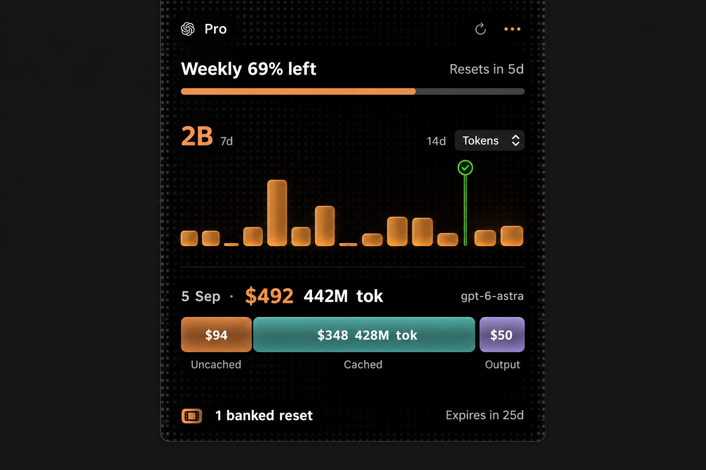

How much
have I got left?
See your Claude and Codex limits at your Mac’s notch. Hover to see your usage and next reset.
Free. Open source. macOS 14+. Notched display required.

Your usage,
one hover away.
Hover over the notch to see more. Click a day for details. Move away to close.
- Choose your provider
- Works with your Codex or Claude Code sign-in.
- Your history stays here
- History stays on your Mac. Costs are estimates.
Try ResetMe.
Download, drag ResetMe to Applications, and open it. Choose Codex or Claude.